Caso 024 · Frank O. Gehry · 1997 · museo (gran equipamiento)
Subir el museo sobre la crecida como una nave de la ría: un basamento de piedra que se atraviesa por una escalinata baja y ancha hasta una sala alta con un haz de sol de invierno, y encima un solo techo de acero que da al arte la luz difusa del norte. Sintetiza el lugar (solar ribereño inundable, cielo cubierto, horizonte abierto hacia la ría), el programa (gran formato y colección que piden luz constante), la composición (retícula de 12 x 12 m, tres niveles) y la construcción (caliza y acero, materiales de la ría).
Retícula de 12 x 12 m (ejes x 24 a 168, y 44 a 128). Estereotómico: el basamento N0 es masa de piedra (macizos de 12 m en las esquinas y los frentes norte y sur, pilares de piedra de 1,2 m en cada nudo) y P1 apoya sobre ellos con pilares de piedra de 0,9 m; la piedra baja continua al suelo. Tectónico: P2 es un hipóstilo de acero de 0,45 m con siete dientes de luz norte, protegido con pintura intumescente y encamisado (R 120). Ocho núcleos de 12 x 12 m (C1-C8), apilados con el mismo polígono de N0 a P2, con escalera de dos tramos, dos ascensores y vestíbulo previo. El pilar de P2 en (120, 92) se apea en una cercha de 24 m sobre el auditorio (cercha de apeo, +9,4 a +11,4); es el único aviso de la comprobación y se acepta por esa razón.
Latitud 43,27° N. Altura solar al mediodía: 23,3° el 21 de diciembre (13:10 solares) y 70,2° el 21 de junio.
Sistema proporcional: 12 m (módulo) · 6 m (ranura) · 24 x 36 m (vestíbulo, 2 x 3 módulos) · 2,25 m frente a 17,5 m. La terraza norte se retiró: no cumplía la condición de horizonte.
Caliza abujardada en fachadas y basamento (1,20 m, con hormigón y aislante dentro), hormigón visto en núcleos y muros de sector, acero y vidrio en P2, chapa en los dientes. La entrada a +5,0 m deja 3,2 m de franco sobre la crecida de proyecto supuesta (+1,8 m); N0 es inundable por diseño: sus muros, pilares y solera son de piedra y hormigón, sin colección ni cuadros bajo +2,0 m, y las instalaciones eléctricas suben a P1. No hay compuertas: con el aviso de crecida (la ría es de marea y la avenida se anuncia con horas) se retiran los vehículos del aparcamiento y se detiene la carga; el agua entra y sale por las puertas abiertas y por la escalinata, cuyos 11 primeros peldaños quedan bajo +1,80.
| Exigido | Propuesto | Cumple |
|---|---|---|
| Situación, plantas, secciones, alzados, detalles, exteriores | U01, P01-P04, S01-S04, D01, U02 | Sí |
| Perspectiva a mano, sección fugada, ambientación | V03, V04, V05 | Sí (croquis con proyección propia) |
| Superficie 26.000-44.000 m² | 32.071 m² por planta (con núcleos) | Sí |
| Colección ≈ un tercio de lo expositivo | 4.290 de 9.762 m² de salas de P2 (44 %); 40 % de los 10.626 m² contando Arte del lugar (864 m²) | Desviación: la colección pesa más de un tercio porque ocupa las salas de luz norte más seguras; se compensa con 4.608 m² de temporales en la misma luz |
| Sector ≤ 2.500 m² | P1: 7 sectores (máx. 2.412); P2: una sala por sector (máx. 2.016) | Sí |
| Evacuación ≤ 50 m | P1 49,9 · P2 49,8 · N0 46,5 m | Sí |
| R 120 en estructura | acero con protección; masa de piedra y hormigón | Sí |
| Itinerario accesible (paso 1,20; puertas 0,80) | ascensores C3/C4 junto a la boca de la escalinata; puertas EI de 2,40 | Sí |
| Escalera pública (huella ≥ 28; tabica ≤ 17,5) | núcleos 28 cm y 17,5 cm; escalinata 30 x 16,1 | Sí |
| Barandilla 1,10 m con caída mayor de 6 m | en bordes de vacío y escaleras | Sí |
| Aseos por planta con dotación | 20 inodoros y 4 accesibles por planta | Desviación: no hay norma de dotación en el encargo; 1 inodoro por 50-70 personas |
Hipóstilo de 12 x 12 m. Forjado mixto de 0,60 m (+0,10 de pavimento); pilares de acero de 0,45 m, de piedra de 0,9 m (P1) y 1,2 m (N0). La cercha de 24 m del auditorio se calcula con canto de 2,0 m (luz/12). Cimentación profunda (aluvión del estuario) sobre pilotaje y losa; sin juntas de dilatación en los 144 m de longitud: el edificio es un solo cuerpo, con la masa de piedra y hormigón del basamento y los pilares esbeltos de acero que absorben los movimientos térmicos; la cubierta de chapa se detalla con paños deslizantes. Es un supuesto de predimensionado: si el cálculo de retracción y temperatura lo rechazara, se abrirían dos juntas en los ejes 5 y 9 y habría que duplicar la retícula en esos ejes. Los dientes cuelgan de la retícula de acero con vigas de 0,45 m.
| Elemento | Material | Acabado |
|---|---|---|
| Fachadas y basamento | piedra | abujardado |
| Núcleos y muros de sector | hormigón | enlucido |
| Tabiques | bloque | enlucido |
| Dientes y paredes de P2 | metal | chapa |
| Banda norte | vidrio | doble, vidrio fijo |
| Forjados | hormigón | pavimento de piedra o tarima |
Canalón de chapa al pie de cada diente (siete) con dos bajantes por canalón, en los extremos este y oeste, hasta el terreno. Climatización por aire con sala de instalaciones en P1; nada eléctrico bajo +2,0 en N0. Extracción de humos y evacuación de calor por las bandas de vidrio de los dientes.
Fachada de 1,20 m: caliza abujardada 0,40, hormigón armado 0,60, aislamiento 0,12, trasdosado 0,08. Cubierta de diente: chapa de acero 4 mm, aislamiento 0,12, lámina y forjado de hormigón 0,20. Solera: pavimento de piedra 0,04, mortero 0,05, losa 0,60.
Clima Cfb: la masa de piedra da inercia y la ligera se defiende del sol con la visera de 2,6 m. Luz norte constante para el arte; agua de lluvia recogida por los canalones; humedad alta: fachada ventilada de piedra.
Entrada por la escalinata de 31 peldaños; los dos ascensores junto a su boca dan el itinerario accesible hasta P2. Ocho núcleos con escalera protegida y vestíbulo previo (en C5 hay además una puerta directa desde Temporales 3). Escalera exterior de evacuación de 29 peldaños, de 1,20 m, para el personal de P1. Salida peatonal directa del aparcamiento al este.
Explanada de acceso, lonja norte (+5,0 m en su borde), apeadero de carga y acceso rodado. Superficie construida sin vuelos ni terrazas descubiertas. El soleamiento de los dientes se muestra en P04.
Comparte con la obra original lo que impone el encargo: el solar junto al puente, el programa, la ría, el clima y la entrada desde el sur. Se aparta de ella en la idea (sube sobre una crecida en vez de abrazar el puente), la geometría (ortogonal, sin curvas), el recorrido (se entra comprimido por una escalinata baja y se asciende a la sala alta), el material (piedra y acero, no titanio) y la luz (haz de invierno calculado y luz norte constante). Desde la teoría: la estructura ordena el espacio, lo estereotómico y lo tectónico se contraponen y la luz se mide.
El soleamiento calculado (S01, P04, V04) y las vistas maqueta 1 y maqueta 2 sustituyen a las maquetas reales al sol. La maqueta interior no calcula las manchas de sol dentro: el haz se dibuja en S01. La crecida de +1,8 m es un dato supuesto. Los avisos de ocupación (U02) y de negro de las plantas (registro T a 1:200-1:300) se aceptan: el solar es muy grande y las láminas se rigen por la escala.
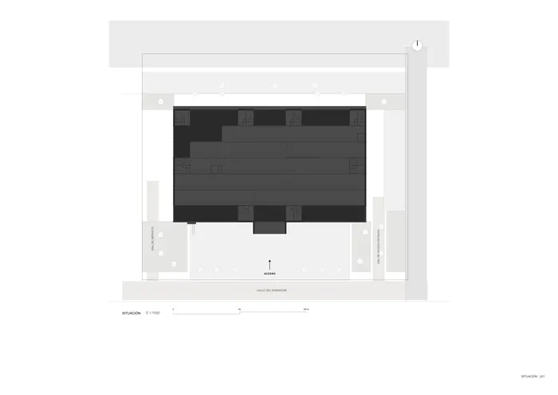
U01 · Situación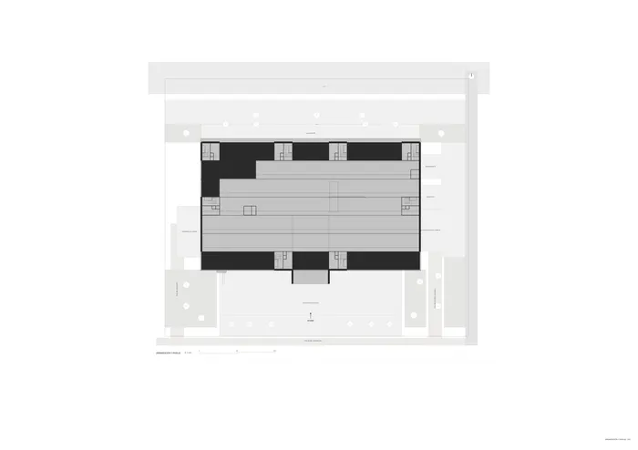
U02 · Urbanización y paisaje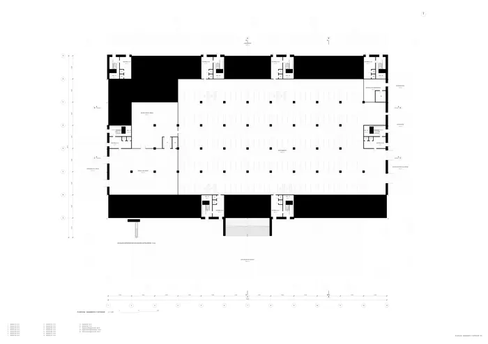
P01 · Planta n0 basamento y exterior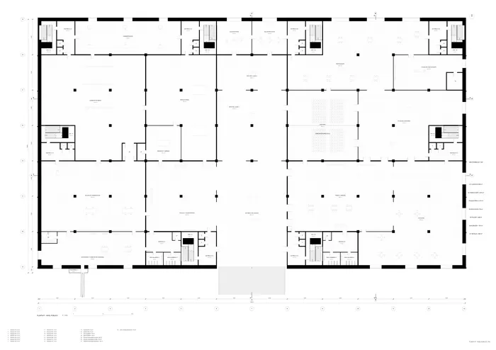
P02 · Planta p1 nivel público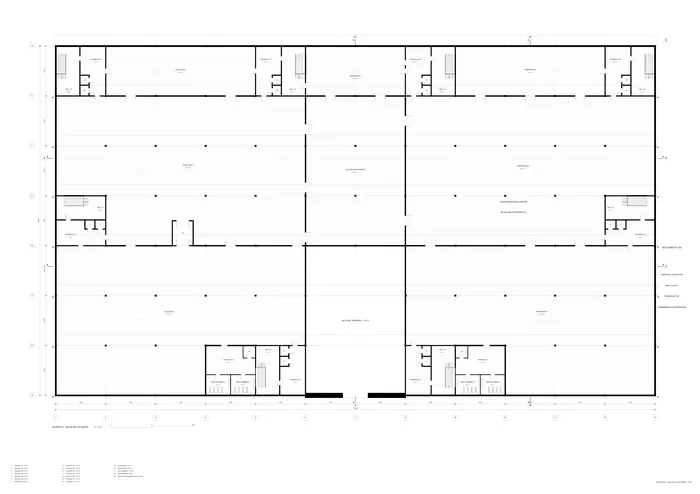
P03 · Planta p2 salas de luz norte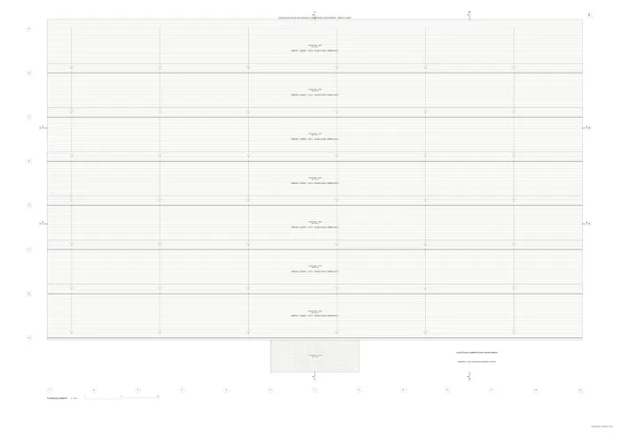
P04 · Planta de cubierta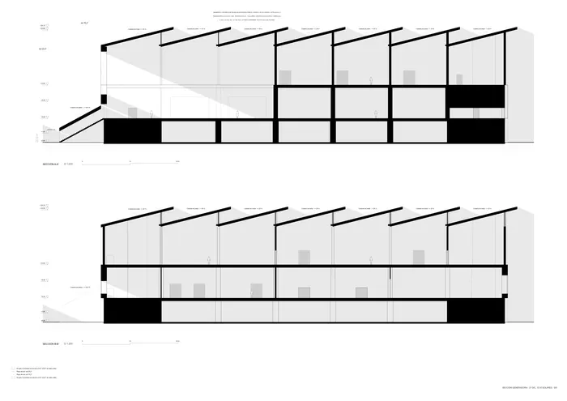
S01 · Sección generadora 21 dic 13 10 solares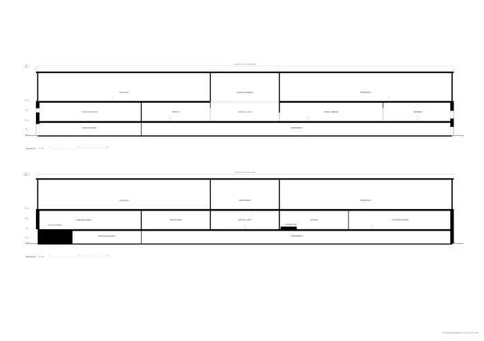
S02 · Secciones transversales C y 75 y d y 101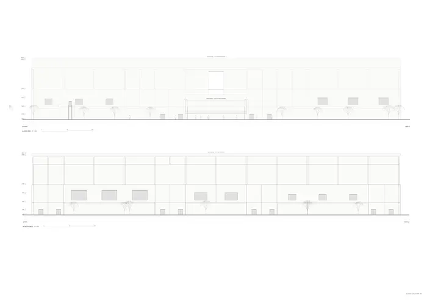
S03 · Alzados sur y norte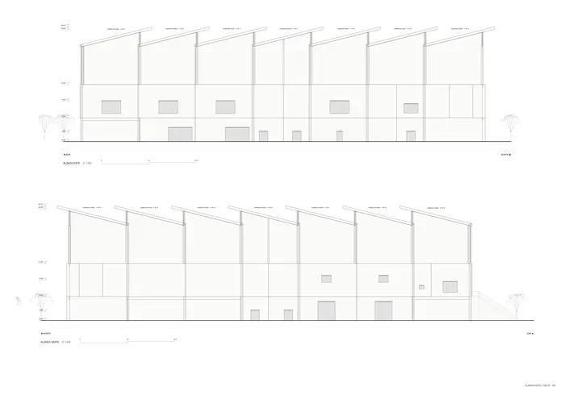
S04 · Alzados este y oeste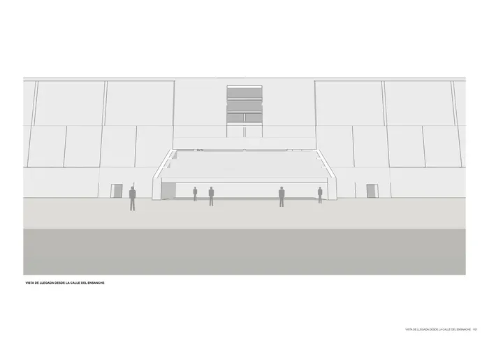
V01 · Vista de llegada desde la calle del ensa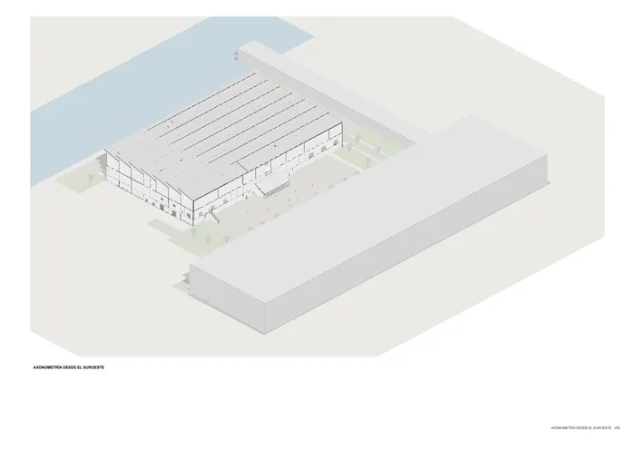
V02 · Axonometría desde el suroeste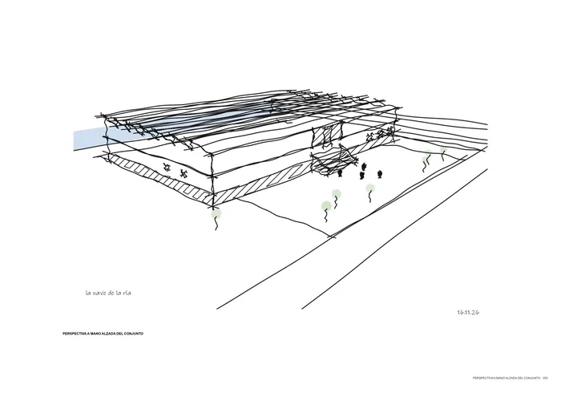
V03 · Perspectiva a mano alzada del conjunto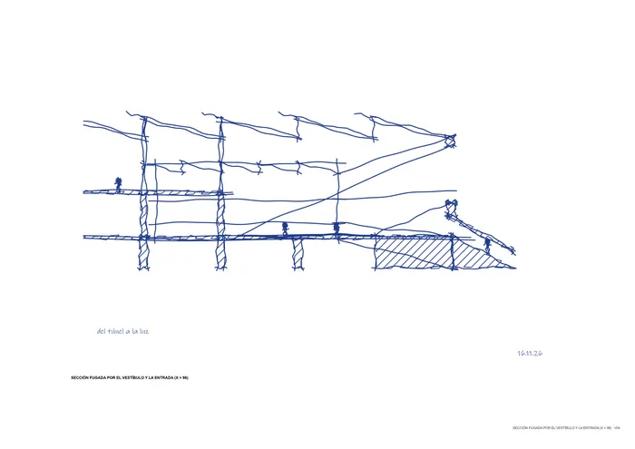
V04 · Sección fugada por el vestíbulo y la ent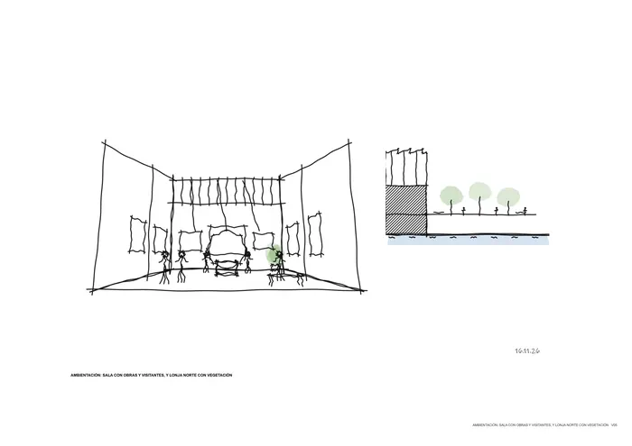
V05 · Ambientación sala con obras y visitantes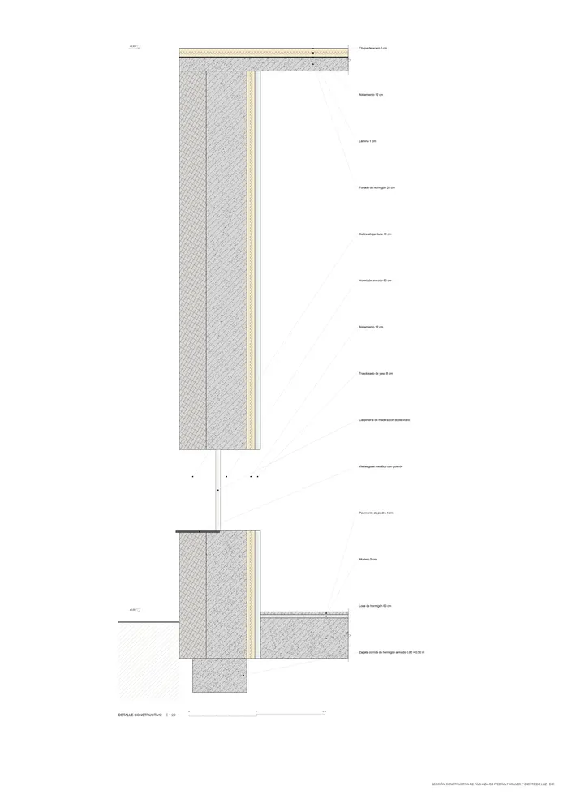
D01 · Sección constructiva de fachada de piedr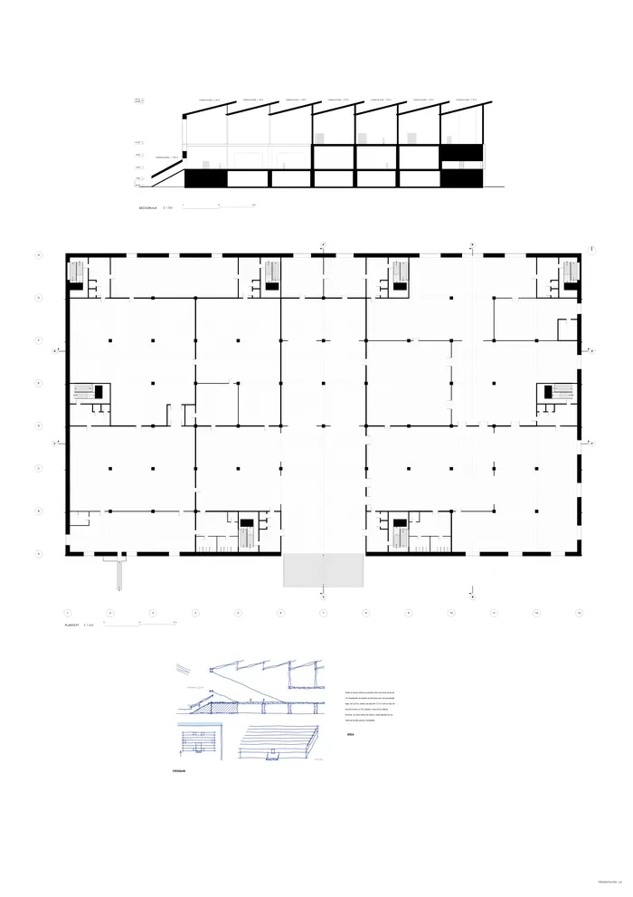
L01 presentaciónMemoria de la propuesta tal como la entregó el sistema. Se han omitido las notas internas del proceso (revisiones, control de reconocimiento y referencias a archivos de trabajo).